Chapter 4 · Design problem
Design a Rate Limiter
How to cap the requests a client can send: where the limiter sits, the five classic algorithms with their worked numbers, and how Redis keeps the counts correct across many servers.
TL;DR
- What: cap the requests a client (user, IP, device…) sends per time period; reject the excess with HTTP 429 Too Many Requests. Prevents DoS, cuts cost, stops overload.
- Scope: server-side, distributed, flexible rules, low latency, little memory, fault tolerant, and it tells throttled users.
- Where: not the client (requests can be forged). Put it in the API servers or in middleware / an API gateway.
- Five algorithms: token bucket (allows bursts; Amazon, Stripe), leaking bucket (FIFO queue, fixed outflow; Shopify), fixed window counter (up to 2× at window edges), sliding window log (exact, memory-hungry), sliding window counter (current + previous × overlap; cheap approximation).
- Counters live in Redis (in-memory, with expiry):
INCR+EXPIRE. Rules live in config files, cached by workers. - Headers:
X-Ratelimit-Remaining,-Limit,-Retry-After. Throttled requests are dropped or queued. - Distributed: race conditions → Lua script or Redis sorted sets (not locks). Many limiters → one central Redis (not sticky sessions).
- Extras: edge data centers, eventual consistency, monitoring, hard vs soft limits, layer-3 limiting (iptables), client best practices.

Interview answer skeleton
If asked this in an interview, walk through these four beats. Each maps to a section below.
- Clarify (≈5 min) Client- or server-side? Throttle by IP, user ID or something else? Scale? Distributed? Separate service or in app code? Tell throttled users? Then state the requirements: accurate, low latency, low memory, distributed, clear exceptions, fault tolerant.
- High-level (≈15 min) Rule out the client and place the limiter in middleware. Give one line on each of the five algorithms and pick one (token bucket is widely used and allows bursts). Draw client → middleware → API servers, with counters in Redis via
INCR/EXPIRE. - Deep dive (≈15 min) Rules in config files cached by workers; 429 plus
X-Ratelimit-*headers; drop or queue throttled requests; race conditions (Lua script, sorted sets); synchronization (central Redis); multi-DC edges with eventual consistency; monitoring. - Wrap up (≈5 min) Hard vs soft limits, limiting at layer 3 (iptables) vs layer 7, and client best practices (cache, catch errors, back off).
Step 1Understand the problem and establish design scope
A rate limiter controls the rate of traffic a client or service sends. Pin down which kind you're building before picking an algorithm.
In HTTP terms, it limits how many requests a client may send over a set period. Once the count passes the threshold, every excess call is blocked. For example:
- A user can write no more than 2 posts per second.
- At most 10 accounts can be created per day from the same IP address.
- Rewards can be claimed no more than 5 times per week from the same device.
Why rate limit?
| Benefit | Details |
|---|---|
| Prevent resource starvation from DoS | A Denial of Service (DoS) attack floods a service so real users can't get through. Blocking excess calls stops both intentional and unintentional DoS. Almost all big-company APIs enforce limits: Twitter allows 300 tweets per 3 hours; Google Docs APIs default to 300 read requests per user per 60 seconds. |
| Reduce cost | Fewer excess requests means fewer servers and more resources for high-priority APIs. Essential when you pay per call for third-party APIs such as checking credit, making a payment or retrieving health records. |
| Prevent server overload | Filters out excess requests caused by bots or misbehaving users. |
Clarifying questions
| You ask | Interviewer says |
|---|---|
| Client-side rate limiter or server-side API rate limiter? | Server-side API rate limiter. |
| Throttle by IP, user ID or other properties? | Flexible enough to support different sets of throttle rules. |
| Scale: a startup or a big company with many users? | Must handle a large number of requests. |
| Will it run in a distributed environment? | Yes. |
| Separate service, or implemented in application code? | Your design decision. |
| Do we inform users who are throttled? | Yes. |
Requirements
- Accurately limit excessive requests
- Low latency: must not slow down HTTP response time
- Use as little memory as possible
- Distributed: one limiter shared across multiple servers or processes
- Exception handling: show clear exceptions to users when they're throttled
- High fault tolerance: a limiter problem (e.g. a cache server going offline) doesn't take down the whole system
Step 2Propose high-level design and get buy-in
Decide where the limiter sits, which algorithm it runs, and where the counters live (Redis).
Where to put the rate limiter
| Placement | How it works | Verdict |
|---|---|---|
| Client-side | The app limits itself before sending | ✗ Unreliable: malicious actors can forge requests, and you may not control the client code. |
| Server-side | The limiter runs inside the API servers (Figure 4-1) | ✓ Full control over the algorithm. |
| Middleware | A separate layer in front of the API servers throttles requests before they reach them (Figure 4-2) | ✓ In cloud microservices this is usually the API gateway. |
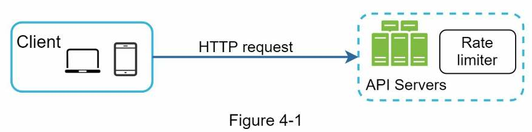
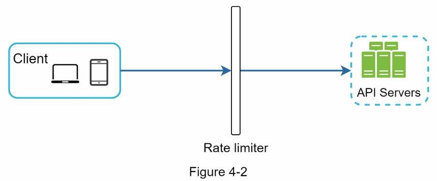
Example (Figure 4-3): the API allows 2 requests per second and a client sends 3 within one second. The first two reach the API servers. The middleware throttles the third and returns HTTP 429, meaning the user has sent too many requests.
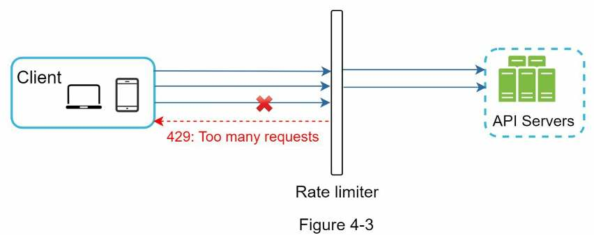
An API gateway is a fully managed service that supports rate limiting, SSL termination, authentication, IP whitelisting, serving static content and more. For now, treat it as middleware that supports rate limiting.
Server-side or gateway? Guidelines
There's no absolute answer. It depends on your company's tech stack, engineering resources, priorities and goals.
- Check your tech stack (language, cache service…). Make sure your language is efficient enough to implement rate limiting on the server side.
- Pick the algorithm that fits the business. Server-side gives you full control of the algorithm; a third-party gateway may limit your choice.
- Already using microservices with an API gateway for authentication, IP whitelisting, etc.? Add the rate limiter to the gateway.
- Building your own takes time. Without enough engineering resources, a commercial API gateway is the better option.
Algorithms for rate limiting
Knowing the algorithms at a high level lets you pick the right one, or a combination, for the use case. The five popular ones: token bucket, leaking bucket, fixed window counter, sliding window log and sliding window counter. A comparison table follows them.
Algorithm 1 · Token bucket
Widely used, simple and well understood. Amazon and Stripe use it to throttle their APIs.
- The bucket has a pre-defined capacity. A refiller adds tokens at a preset rate. Once the bucket is full, extra tokens overflow and are lost. In Figure 4-4 the capacity is 4 and the refiller adds 2 tokens per second.
- Each request consumes one token. When a request arrives, check whether the bucket has enough tokens.
- Enough tokens → take one out and let the request through. Not enough → drop the request (Figure 4-5).
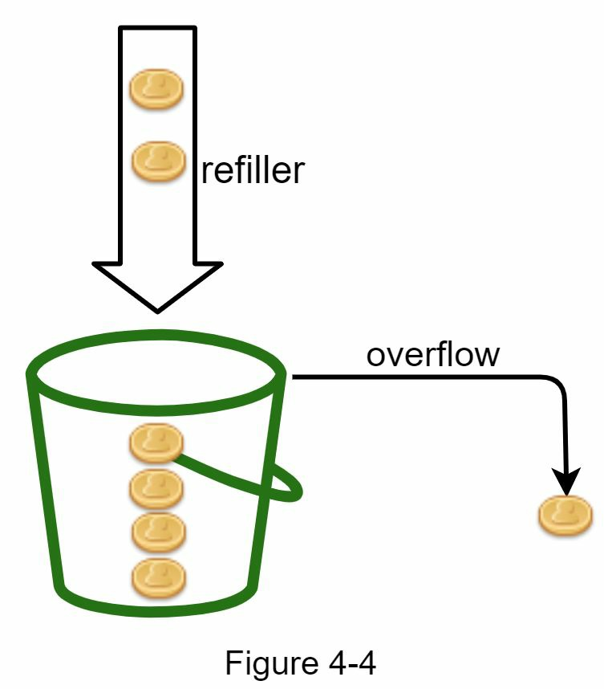
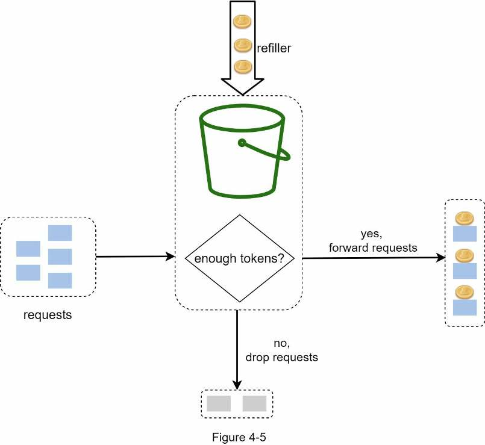
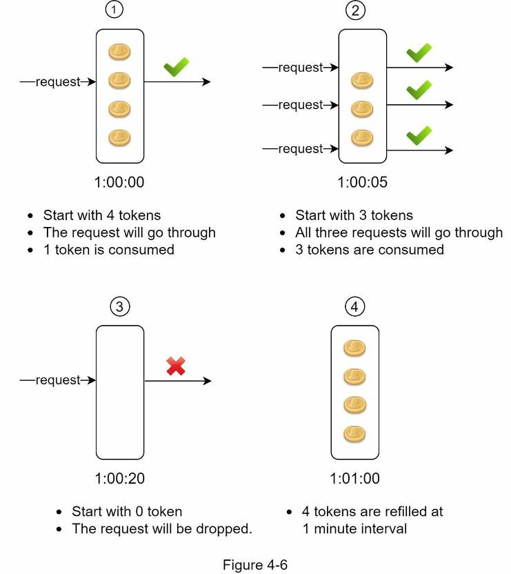
Parameters
- Bucket size: the maximum number of tokens allowed in the bucket.
- Refill rate: the number of tokens put into the bucket every second (Figure 4-6 uses a per-minute rate).
How many buckets?
It depends on the rate-limiting rules:
- One per API endpoint, per user. If a user may make 1 post per second, add 150 friends per day and like 5 posts per second, each user needs 3 buckets.
- One per IP address if you throttle by IP.
- One global bucket shared by all requests if the system allows a maximum of, say, 10,000 requests per second.
Pros
- Easy to implement
- Memory efficient
- Allows short bursts of traffic: a request goes through as long as tokens are left
Cons
- Two parameters (bucket size, refill rate) that can be hard to tune properly
Algorithm 2 · Leaking bucket
Like the token bucket, except requests are processed at a fixed rate. It's usually built on a first-in-first-out (FIFO) queue. Shopify uses leaky buckets.
- A request arrives. Is the queue full?
- Not full → add the request to the queue. Full → drop it.
- Requests are pulled from the queue and processed at regular intervals.
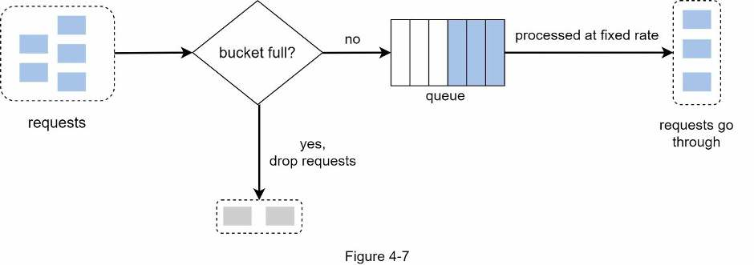
Parameters
- Bucket size: equal to the queue size. The queue holds requests waiting to be processed at the fixed rate.
- Outflow rate: how many requests are processed per fixed interval, usually per second.
Pros
- Memory efficient, given the limited queue size
- Fixed processing rate suits use cases that need a stable outflow
Cons
- A burst fills the queue with old requests; if they aren't processed in time, recent requests get rate limited
- Two parameters that may not be easy to tune
Algorithm 3 · Fixed window counter
- Divide the timeline into fixed-size time windows, with a counter for each window.
- Each request increments the counter by one.
- Once the counter reaches the threshold, drop new requests until the next window starts.
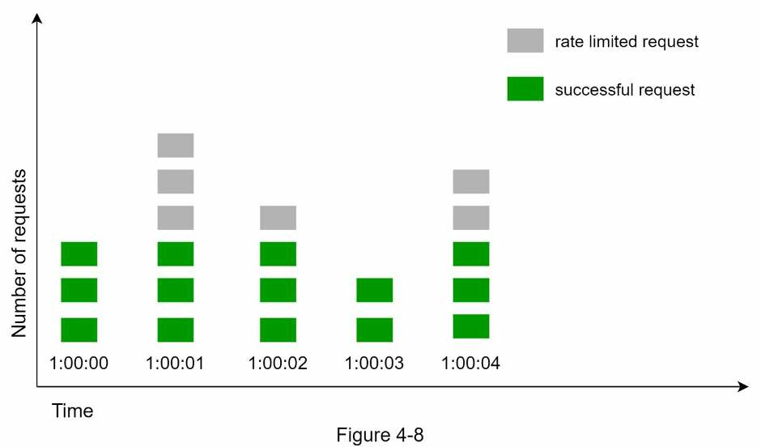
The big problem: a burst at the edges of two windows lets more than the quota through. In Figure 4-9 the limit is 5 requests per minute and the quota resets on the round minute. Five requests land between 2:00:30 and 2:01:00 and five more between 2:01:00 and 2:01:30. Each fixed window sees only 5, but the one-minute window from 2:00:30 to 2:01:30 lets 10 through: twice the limit.
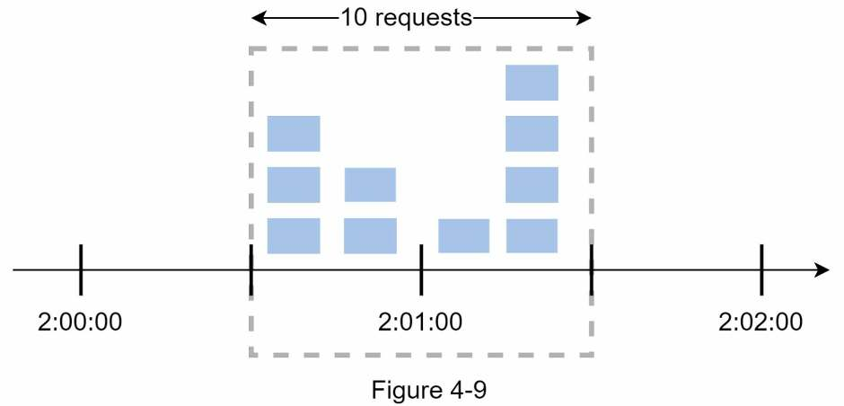
Pros
- Memory efficient
- Easy to understand
- Resetting quota at the end of a unit time window fits certain use cases
Cons
- A traffic spike at window edges can let more requests than the quota through (up to 2×)
Algorithm 4 · Sliding window log
Fixes the fixed window's edge problem by remembering when each request happened.
- Keep a log of request timestamps, usually in a cache such as Redis sorted sets.
- When a request arrives, remove all outdated timestamps: those older than the start of the current window.
- Add the new request's timestamp to the log.
- If the log size is ≤ the allowed count, accept the request. Otherwise reject it.
Example (Figure 4-10): limit 2 requests per minute. Real logs store Linux timestamps; human-readable times are used here.
| Request at | Log after the request | Size | Result |
|---|---|---|---|
| 1:00:01 | 1:00:01 (log was empty) | 1 | ✓ Allowed |
| 1:00:30 | 1:00:01, 1:00:30 | 2 | ✓ Allowed (not larger than 2) |
| 1:00:50 | 1:00:01, 1:00:30, 1:00:50 | 3 | ✗ Rejected, but its timestamp stays in the log |
| 1:01:40 | Window is [1:00:40, 1:01:40), so 1:00:01 and 1:00:30 are removed → 1:00:50, 1:01:40 | 2 | ✓ Allowed |
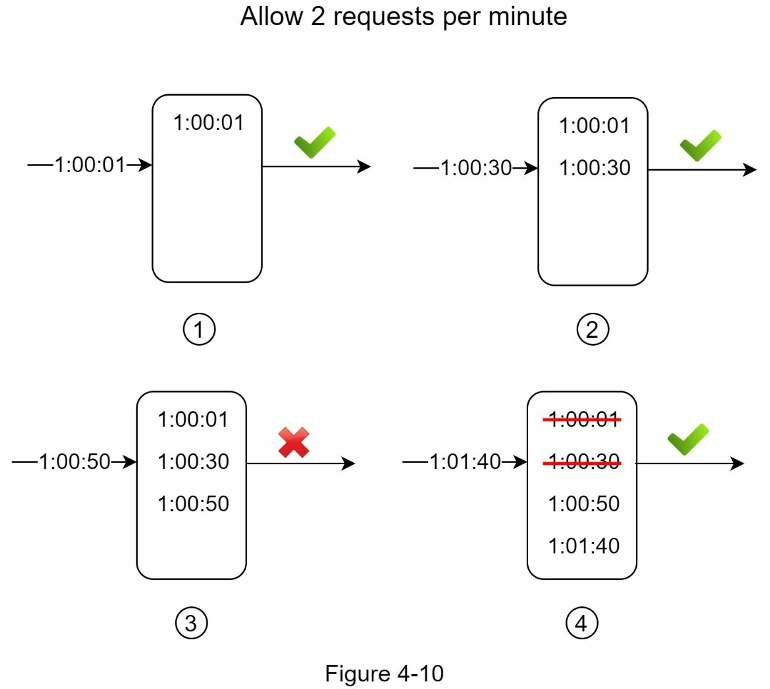
Pros
- Very accurate: in any rolling window, requests never exceed the limit
Cons
- Uses a lot of memory: even a rejected request's timestamp may be kept
Algorithm 5 · Sliding window counter
A hybrid of the fixed window counter and the sliding window log. There are two ways to implement it; the book covers one (see reference [9] for the other). It keeps just two counters but estimates a rolling window:
requests in rolling window = requests in current window
+ requests in previous window × overlap of rolling window with previous windowExample: the limit is 7 requests per minute. The previous minute had 5 requests and the current minute has 3. A new request arrives 30% into the current minute, so the rolling minute overlaps the previous minute by 70%:
3 + 5 × 0.7 = 6.5 → rounded down to 6 (6 < 7, so the request goes through)Depending on the use case you can round up or down; the book rounds down. One more request would reach the limit. (The book prints "5 * 0.7%"; the factor is 0.7, i.e. 70%.)
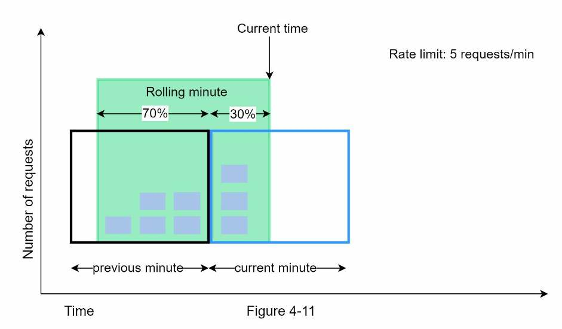
Pros
- Smooths out traffic spikes, because the rate is based on the previous window's average rate
- Memory efficient
Cons
- Only works for a not-so-strict look-back window. It's an approximation that assumes the previous window's requests were evenly spread. In practice that's minor: in Cloudflare's experiments only 0.003% of 400 million requests were wrongly allowed or rate limited.
Comparing the five algorithms
| Algorithm | How it decides | Parameters | Memory-efficient | Best at | Weakness |
|---|---|---|---|---|---|
| Token bucket | Each request takes a token; tokens refill at a fixed rate | Bucket size, refill rate | ✓ | Short bursts; simple (Amazon, Stripe) | Two parameters, hard to tune |
| Leaking bucket | FIFO queue drained at a fixed rate; full queue → drop | Bucket (queue) size, outflow rate | ✓ | Stable outflow rate (Shopify) | Bursts fill the queue with old requests, starving new ones; hard to tune |
| Fixed window counter | One counter per fixed window | Window size, limit | ✓ | Easy to understand; quota resets on round time units | Up to 2× the limit at window edges |
| Sliding window log | Stores every timestamp; counts those inside the rolling window | Window size, limit | ✗ | Exact in any rolling window | Memory-hungry; even rejected requests are logged |
| Sliding window counter | Current count + previous count × overlap | Window size, limit | ✓ | Smooths spikes; near-exact (0.003% wrong) | Approximation; assumes an even spread in the previous window |
Both limiters allow 4 requests per 4 seconds. Fire single requests or bursts and watch which get 200 and which get 429. The token bucket refills one token per second; the fixed window resets all at once. In fixed-window mode, send a burst just before the window resets and another just after: 8 requests pass within a second.
High-level architecture
Every algorithm boils down to a counter that tracks how many requests came from the same user, IP address, etc. If the counter is larger than the limit, the request is disallowed.
Where to store counters? Not a database: disk access is too slow. Use an in-memory cache, which is fast and supports time-based expiration. Redis is a popular choice and offers two commands:
INCR: increases the stored counter by 1.EXPIRE: sets a timeout on the counter. When it expires, the counter is deleted automatically.
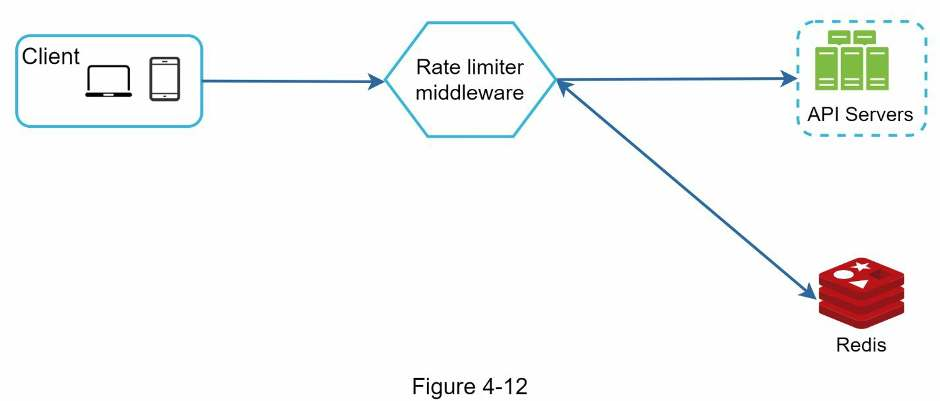
- The client sends a request to the rate limiting middleware.
- The middleware fetches the counter from the corresponding bucket in Redis and checks whether the limit is reached.
- Limit reached → reject the request.
- Not reached → send the request to the API servers. Meanwhile, increment the counter and save it back to Redis.
Step 3Design deep dive
Answer what the high-level design leaves open: how rules are created and stored, how throttled requests are handled, and how it all works across many servers.
Rate limiting rules
Lyft open-sourced its rate-limiting component. Its rules look like this. Allow at most 5 marketing messages per day:
domain: messaging
descriptors:
- key: message_type
value: marketing
rate_limit:
unit: day
requests_per_unit: 5Clients may not log in more than 5 times per minute:
domain: auth
descriptors:
- key: auth_type
value: login
rate_limit:
unit: minute
requests_per_unit: 5Rules are generally written in configuration files and saved on disk. (The book prints the key as Value; Lyft's config uses lowercase value.)
Exceeding the rate limit
A rate-limited request gets HTTP 429 (Too Many Requests). Depending on the use case, you may enqueue rate-limited requests to process later. For example, if some orders are rate limited because the system is overloaded, keep them and process them later.
Rate limiter headers
The client learns whether it's being throttled, and how many requests it has left, from HTTP response headers:
| Header | Meaning |
|---|---|
X-Ratelimit-Remaining | Remaining allowed requests within the window |
X-Ratelimit-Limit | How many calls the client can make per time window |
X-Ratelimit-Retry-After | Seconds to wait before you can make a request again without being throttled |
When a user has sent too many requests, the response is a 429 with the X-Ratelimit-Retry-After header.
Detailed design
- Rules are stored on disk. Workers frequently pull them from disk and store them in a cache.
- A client request goes to the rate limiter middleware first.
- The middleware loads rules from the cache, and fetches the counters and last request timestamp from Redis.
- Not rate limited → forward the request to the API servers.
- Rate limited → return 429 to the client, and either drop the request or forward it to a message queue.
Rate limiter in a distributed environment
One server is easy. Supporting multiple servers and concurrent threads raises two challenges: race conditions and synchronization.
Race condition
The limiter's basic loop is: read the counter from Redis → check whether counter + 1 exceeds the threshold → if not, increment the counter in Redis. Under high concurrency that loop races (Figure 4-14).
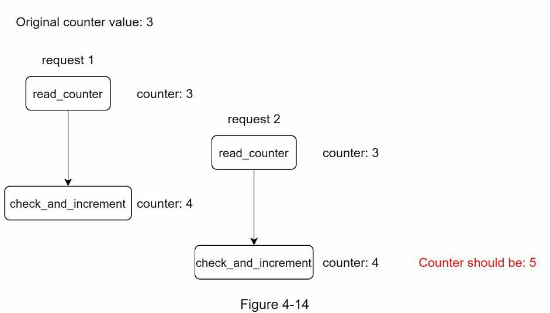
Locks are the obvious fix but significantly slow the system down. Two strategies are commonly used instead: a Lua script and the Redis sorted set data structure.
Synchronization issue
To support millions of users you need more than one rate limiter server, and then they must share state. The web tier is stateless, so a client's requests can land on different limiters. In Figure 4-15 (right), if nothing is synchronized, rate limiter 1 has no data about client 2 and can't limit it properly.
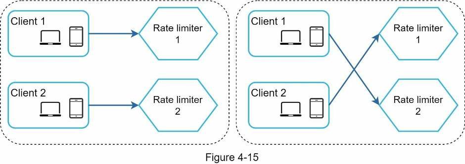
| Fix | How | Verdict |
|---|---|---|
| Sticky sessions | Route each client's traffic to the same rate limiter | ✗ Neither scalable nor flexible |
| Centralized data store | All limiters read and write counters in one shared Redis (Figure 4-16) | ✓ Better approach |
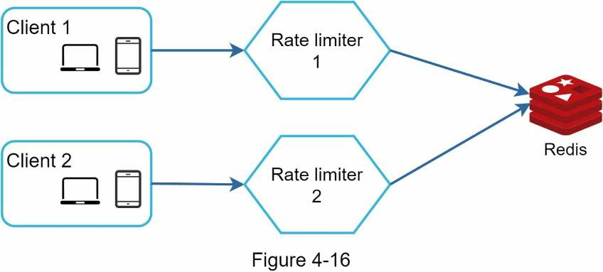
Performance optimization
- Multi-data center setup. Latency is high for users far from the data center, so this is crucial for a rate limiter. Most cloud providers run many edge server locations worldwide; as of May 2020, Cloudflare had 194 geographically distributed edge locations. Traffic is routed automatically to the closest edge server to reduce latency.
- Synchronize data with an eventual consistency model. (See the "Consistency" section of Chapter 6: Design a Key-Value Store.)
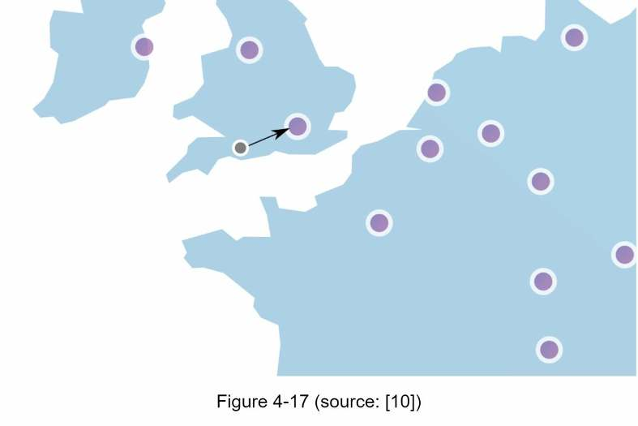
Monitoring
Once the limiter is live, gather analytics to confirm that both the algorithm and the rules are effective.
- Rules too strict → many valid requests are dropped → relax the rules a little.
- Limiter fails under sudden traffic spikes such as flash sales → switch to an algorithm that supports bursts. Token bucket is a good fit.
Step 4Wrap up
Recap the five algorithms, the architecture, distributed concerns, performance and monitoring. Then raise these if time allows.
- Hard vs soft rate limiting.
- Hard: requests can never exceed the threshold.
- Soft: requests can exceed the threshold for a short period.
- Rate limiting at different levels. This chapter limits at the application level (HTTP, layer 7). You can also limit at other layers, e.g. by IP address with iptables (IP, layer 3). The 7 layers of the OSI model (Open Systems Interconnection):
- Avoid being rate limited. Client best practices:
- Use a client cache to avoid making frequent API calls.
- Understand the limit and don't send too many requests in a short time.
- Catch exceptions and errors so the client can recover gracefully.
- Add sufficient back-off time to retry logic.
Self-test
Name the three benefits of a rate limiter, with an example for each.
Prevent resource starvation from DoS (e.g. Twitter's 300 tweets per 3 hours), reduce cost (fewer servers; per-call third-party APIs such as credit checks and payments), and prevent server overload from bots or misbehaving users.
Why not enforce rate limiting on the client?
Malicious actors can easily forge client requests, and you may not control the client implementation.
When should the rate limiter go in an API gateway rather than your own server-side code?
When you already run microservices with an API gateway (for authentication, IP whitelisting, etc.), or lack the engineering resources to build your own. The catch: a third-party gateway may limit your choice of algorithm.
How does the token bucket algorithm work, and what are its two parameters?
A refiller adds tokens at a fixed rate up to the bucket's capacity (extras overflow). Each request takes one token; no token means the request is dropped. Parameters: bucket size and refill rate.
A user may post once per second, add 150 friends per day and like 5 posts per second. How many token buckets per user? What about per-IP limiting, or a 10,000 req/s system-wide cap?
3 buckets per user (one per endpoint). One bucket per IP address. One global bucket shared by all requests.
How does the leaking bucket differ from the token bucket, and what's its main drawback?
Requests go into a FIFO queue (dropped if full) and are processed at a fixed outflow rate. A burst fills the queue with old requests, so recent requests get rate limited if the old ones aren't processed in time.
What's the fixed window counter's major flaw? Use the book's numbers.
Bursts at window edges. Limit 5/min: 5 requests between 2:00:30 and 2:01:00 plus 5 between 2:01:00 and 2:01:30 means 10 pass in the one-minute window 2:00:30–2:01:30, twice the limit.
Sliding window log, limit 2/min. Requests arrive at 1:00:01, 1:00:30, 1:00:50 and 1:01:40. Which are accepted?
Accepted, accepted, rejected (log size 3, but its timestamp stays logged), accepted (1:00:01 and 1:00:30 fall before 1:00:40 and are removed, leaving 2). Accurate in any rolling window, but memory-hungry.
Sliding window counter: limit 7/min, 5 requests last minute, 3 this minute, new request 30% into the minute. Allowed?
3 + 5 × 0.7 = 6.5, rounded down to 6, which is under 7, so yes. It's an approximation, but Cloudflare found only 0.003% of 400 million requests wrongly allowed or limited.
Why store counters in Redis rather than a database, and which two commands do you use?
Disk access is too slow; an in-memory cache is fast and supports time-based expiration. INCR increments the counter; EXPIRE sets a timeout after which the counter is deleted.
What does a throttled client receive, and which headers help clients avoid throttling?
HTTP 429 Too Many Requests with X-Ratelimit-Retry-After. Responses also carry X-Ratelimit-Remaining and X-Ratelimit-Limit.
Describe the race condition in a distributed rate limiter and how to fix it without locks.
Counter is 3; two requests read 3 concurrently, each writes 4, but it should be 5. Locks work but slow the system significantly; use a Lua script or Redis sorted sets instead.
You run several rate limiter servers. Why not use sticky sessions, and what's better?
Sticky sessions are neither scalable nor flexible. Use a centralized data store such as Redis that every limiter reads and writes.
Monitoring shows the limiter breaks down during flash sales. What do you change?
Switch to an algorithm that supports burst traffic, such as the token bucket. (If valid requests are being dropped in general, relax the rules instead.)
What's the difference between hard and soft rate limiting, and at which other OSI layer can you limit?
Hard: requests can never exceed the threshold. Soft: they can exceed it for a short period. Besides layer 7 (HTTP), you can limit by IP address at layer 3, e.g. with iptables.
Terms to know
- Rate limiter
- Controls how many requests a client or service can send in a time period; excess calls are blocked.
- HTTP 429
- "Too Many Requests": the status code returned when a request is rate limited.
- Token bucket
- Requests spend tokens that refill at a fixed rate up to a capacity; allows short bursts.
- Leaking bucket
- A FIFO queue of requests drained at a fixed outflow rate; full queue means drop.
- API gateway
- Managed middleware in front of services handling rate limiting, SSL termination, authentication, IP whitelisting, static content.
- INCR / EXPIRE
- Redis commands: add 1 to a counter / delete it automatically after a timeout.
- Race condition
- Concurrent read-then-write operations overwrite each other, leaving a wrong counter.
- Lua script
- A script Redis executes as one atomic unit; used to make check-and-increment safe.
- Sorted set
- A Redis structure of members ordered by score (here, timestamps); used for sliding window logs.
- Sticky session
- Routing a client to the same server every time; rejected here as unscalable and inflexible.
- Eventual consistency
- Replicas may briefly disagree but converge over time; used here to sync rate limiter data.
- Edge server
- A server in a location close to users, so traffic travels less distance.
Book references (go deeper)
- Rate-limiting strategies and techniques
- Twitter rate limits
- Google docs usage limits
- IBM microservices
- Throttle API requests for better throughput
- Stripe rate limiters
- Shopify REST Admin API rate limits
- Better Rate Limiting With Redis Sorted Sets
- System Design — Rate limiter and Data modelling
- How we built rate limiting capable of scaling to millions of domains
- Redis website
- Lyft rate limiting
- Scaling your API with rate limiters
- What is edge computing
- Rate Limit Requests with Iptables
- OSI model